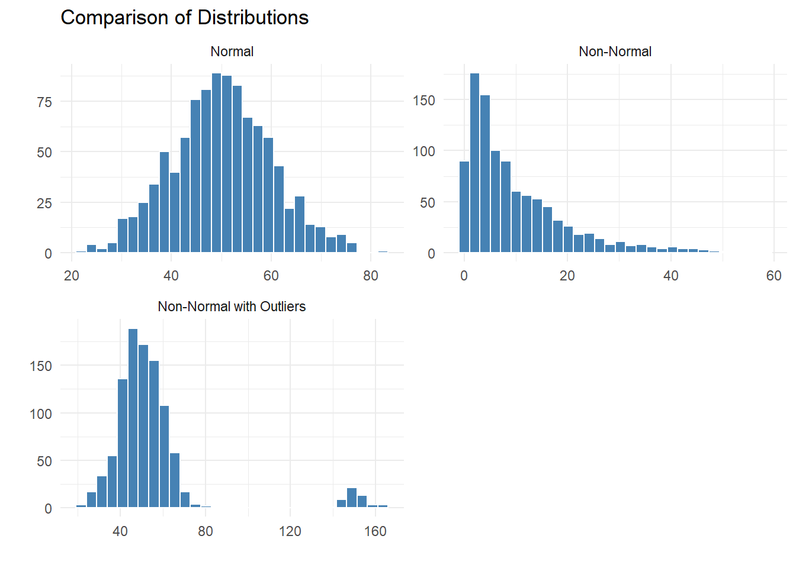

Parametric tests (see below) are favoured when their assumptions can be satisfied since they are generally more powerful; that is, that they are more likely to detect real, significant patterns (e.g. a difference, a relationship) when present. However, the use of parametric tests is hinged on some key assumptions that, when they are not satisfied, might favour the use of non-parametric tests as an alternative.
Below are some frequently used terms that describe the assumptions of statistical tests; these assumptions can be used to inform both the selection of the test used and the potential data manipulations needed to make your data satisfy those assumptions (e.g. your data might be non-normal but that distribution might be driven by just a few outliers, in which case it could be preferable to remove those outliers to enable a parametric test as opposed to selecting a less powerful, non-parametric test due to non-normality). Finally, it is worth noting that ‘non-parametric’ does not mean that the test makes no assumptions about the data, only that it typically makes no assumptions about the distribution of the data.
Assumptions Dictionary
Assumption
Definition
Normal Distribution
Arobability distribution that is symmetric about the mean with value frequency decreasing with distance from the mean (i.e. the classic ‘bell-curve distribution’.
Parametric
Tests that make assumptions about the distribution of a population (generally, the ‘normal’ distribution) from which they are sampled.
Non-parametric
Tests that do not assume the sample follows a normal distribution.
Paired Data (aka repeated measures)
Two or more variables that are linked together between datasets and/or groups (e.g. pre- and post-surgery haemoglobin values of the same patient).
Independent Data
Two or more variables/datasets that do not depend on each other (i.e. the values in one sample do not affect the values in another sample).
Homoscedasticity (aka homogeneity of variance)
The variances of independent groups being compared are approximately equal.
Multicollinearity
When two or more independent variables in a regression model are highly correlated with each other.
Statistical Tests & Their Assumptions
Statistical Test
Assumption
1-Sample Wilcoxon Test (signed rank)
Non-parametric
1-Sample t-test
Parametric
Paired-Sample t-test
Parametric; Paired data; Normal Distribution of mean difference between groups
Wilcoxon Test (signed rank)
Non-parametric; Independent data; Distribution shape similar between groups
2-Sample t-test
Parametric; Independent data; Homoscedasticity
Mann-Whitney
Non-parametric; Independent data; Distribution shape similar between groups
One-Way ANOVA
Parametric; Independent data; Homoscedasticity
Kruskal-Wallis
Non-parametric; Independent data; Distribution shape similar between groups
Two-Way ANOVA
Parametric; Independent Data; Homoscedasticity
Linear Regression
Parametric; Consistent variance; No multicollinearity; homoscendasticity of the dependent variable across the vales of the independent variables
Pearson’s R Correlation
Parametric; Does not assume dependence of one variable on another
Spearman’s Rank
Non-parametric; Does not assume dependence of one variable on another
X2 (Chi-square) Goodness of Fit
Non-parametric; Independent data; Mutually exclusive groups
X2 (Chi-square) Contingency Table
Non-parametric; Independent data; Mutually exclusive groups
Testing Assumptions of Your Data
Histogram
Visualising your data using geom_histogram() is great for spotting normality without doing any statistical testing.
Code
# Load librarieslibrary(ggplot2)# 1. Normally distributed dataset.seed(123)normal_data <-rnorm(1000, mean =50, sd =10)# 2. Non-normally distributed data (Exponential)non_normal_data <-rexp(1000, rate =0.1)# 3. Non-normal with outliers (Start with normal, add extreme values)outlier_data <-c(rnorm(950, mean =50, sd =10), rnorm(50, mean =150, sd =5))# Create data frames for plottingdf1 <-data.frame(value = normal_data, type ="Normal")df2 <-data.frame(value = non_normal_data, type ="Non-Normal")df3 <-data.frame(value = outlier_data, type ="Non-Normal with Outliers")# Combine allall_data <-rbind(df1, df2, df3)all_data$type <-factor(all_data$type,levels =c("Normal", "Non-Normal", "Non-Normal with Outliers"))# Plot histograms using facetsggplot(all_data, aes(x = value)) +geom_histogram(bins =30, fill ="steelblue", color ="white") +facet_wrap(~type, scales ="free",nrow =2) +theme_minimal() +labs(title ="Comparison of Distributions",x ="",y ="")

Shapiro-Wilks Test
This statistical test of normality tests the null-hypothesis that the data is normally distributed, with a significant (< 0.05) p-value indicating non-normal data.
Code
shapiro.test(all_data$value)
Shapiro-Wilk normality test
data: all_data$value
W = 0.86474, p-value < 2.2e-16
Source Code
---title: "Assumptions & Data Criteria"format: html: code-fold: true code-tools: true ---Parametric tests (see below) are favoured when their assumptions can be satisfied since they are generally more powerful; that is, that they are more likely to detect real, significant patterns (e.g. a difference, a relationship) when present. However, the use of parametric tests is hinged on some key assumptions that, when they are not satisfied, might favour the use of non-parametric tests as an alternative. Below are some frequently used terms that describe the assumptions of statistical tests; these assumptions can be used to inform both the selection of the test used and the potential data manipulations needed to make your data satisfy those assumptions (e.g. your data might be non-normal but that distribution might be driven by just a few outliers, in which case it could be preferable to remove those outliers to enable a parametric test as opposed to selecting a less powerful, non-parametric test due to non-normality). Finally, it is worth noting that ‘non-parametric’ does not mean that the test makes *no* assumptions about the data, only that it typically makes no assumptions about the *distribution* of the data.## Assumptions Dictionary| Assumption | Definition ||------------------------------------|------------------------------------|| Normal Distribution | Arobability distribution that is symmetric about the mean with value frequency decreasing with distance from the mean (i.e. the classic ‘bell-curve distribution’. || Parametric | Tests that make assumptions about the distribution of a population (generally, the ‘normal’ distribution) from which they are sampled. || Non-parametric | Tests that do not assume the sample follows a normal distribution. || Paired Data (aka repeated measures) | Two or more variables that are linked together between datasets and/or groups (e.g. pre- and post-surgery haemoglobin values of the same patient). || Independent Data | Two or more variables/datasets that do not depend on each other (i.e. the values in one sample do not affect the values in another sample). || Homoscedasticity (aka homogeneity of variance) | The variances of independent groups being compared are approximately equal. || Multicollinearity | When two or more independent variables in a regression model are *highly* correlated with each other. |## Statistical Tests & Their Assumptions| | ||--------------------------|----------------------------------------------|| Statistical Test | Assumption || 1-Sample Wilcoxon Test (signed rank) | Non-parametric || 1-Sample *t*-test | Parametric || Paired-Sample *t*-test | Parametric; Paired data; Normal Distribution of mean difference between groups || Wilcoxon Test (signed rank) | Non-parametric; Independent data; Distribution *shape* similar between groups || 2-Sample *t*-test | Parametric; Independent data; Homoscedasticity || Mann-Whitney | Non-parametric; Independent data; Distribution *shape* similar between groups || One-Way ANOVA | Parametric; Independent data; Homoscedasticity || Kruskal-Wallis | Non-parametric; Independent data; Distribution *shape* similar between groups || Two-Way ANOVA | Parametric; Independent Data; Homoscedasticity || Linear Regression | Parametric; Consistent variance; No multicollinearity; homoscendasticity of the dependent variable across the vales of the independent variables || Pearson's R Correlation | Parametric; Does not assume dependence of one variable on another || Spearman's Rank | Non-parametric; Does not assume dependence of one variable on another || X^2^ (Chi-square) Goodness of Fit | Non-parametric; Independent data; Mutually exclusive groups || X^2^ (Chi-square) Contingency Table | Non-parametric; Independent data; Mutually exclusive groups |## Testing Assumptions of Your Data### Testing Normality#### HistogramVisualising your data using geom_histogram() is great for spotting normality without doing any statistical testing.```{r Histograms}# Load librarieslibrary(ggplot2)# 1. Normally distributed dataset.seed(123)normal_data <- rnorm(1000, mean = 50, sd = 10)# 2. Non-normally distributed data (Exponential)non_normal_data <- rexp(1000, rate = 0.1)# 3. Non-normal with outliers (Start with normal, add extreme values)outlier_data <- c(rnorm(950, mean = 50, sd = 10), rnorm(50, mean = 150, sd = 5))# Create data frames for plottingdf1 <- data.frame(value = normal_data, type = "Normal")df2 <- data.frame(value = non_normal_data, type = "Non-Normal")df3 <- data.frame(value = outlier_data, type = "Non-Normal with Outliers")# Combine allall_data <- rbind(df1, df2, df3)all_data$type <- factor(all_data$type, levels = c("Normal", "Non-Normal", "Non-Normal with Outliers"))# Plot histograms using facetsggplot(all_data, aes(x = value)) + geom_histogram(bins = 30, fill = "steelblue", color = "white") + facet_wrap(~type, scales = "free", nrow = 2) + theme_minimal() + labs(title = "Comparison of Distributions", x = "", y = "")```##### Shapiro-Wilks TestThis statistical test of normality tests the null-hypothesis that the data is normally distributed, with a significant (< 0.05) p-value indicating non-normal data. That being said, Shapiro-Wilks can be particularly sensitive to large sample sizes (particularly relevant to much of the work in Info Delivery), in which case it is also appropriate to pay attention to the W value of the test, which is essentially a score between 0 and 1 of how well the data matches a normal distribution, with 1 representing a perfect match. With large sample sizes, a Shapiro-Wilks test might indicate (with a significant p-value) that a dataset is non-normal, but the W value is 0.99, in which case it is unlikely that any subsequent data manipulations would be needed for most statistical tests. Still, it provides a useful flag for when you should be on the lookout for potential adjustments to the data that you could make to better fulfil the parameters of your statistical test (e.g. there could be some outliers worth removing).```{r}shapiro.test(all_data$value)```### Testing Homoscedasticity#### Levene's TestLevene’s Test is a statistical test of homogeneity of variances. It tests the null-hypothesis that there is equal variance between samples (i.e. groups), with a significant (i.e. < 0.05) p-value indicating unequal variance between samples. Boxplots (code below) can be used to visualise differences in variance between samples.```{r}leveneTest(value ~ type, all_data)```### High Covariance#### Variance Inflation Factor (VIF)VIF is a tool to help identify the degree of multicollinearity among predictor variables in a multiple (linear) regression analysis (if only one explanatory variable for the independent variable is being used, then there is no need to consider multicollinearity). If multicollinearity is present within a multiple regression, then the p-values and regression coefficients of the resulting analysis are typically unreliable. This is because, in simple terms, including highly correlated variables within the regression analysis can be thought of as ‘double counting’; the analysis then struggles to determine the separate influence of those correlated variables with the independent variable. Testing VIF first involves running a linear regression (model), so you may want to see later sections for more context on the analysis beforehand. A VIF value above 5 is generally deemed to give ‘cause for concern’, indicating high collinearity.```{r}model <-lm(y ~ x + z, data)library(car)vif(model)```